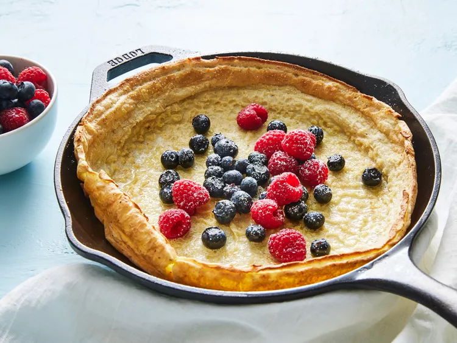

Dutch Babies

Dutch Baby Ingredients
These are the basic pantry staples you'll need to make this easy Dutch baby recipe:
- Eggs and milk: This light and fluffy Dutch baby recipe starts with two eggs whisked with milk.
- Flour: All-purpose flour lends structure and helps hold the batter together.
- Seasonings: These sweet Dutch babies are flavored with nutmeg and a pinch of salt.
- Butter: Grease the hot skillet with two tablespoons of butter.
- Sugar: Dust the finished Dutch baby with confectioners' sugar before serving.
How to Make a Dutch Baby
You'll find the full, step-by-step recipe below - but here's a brief overview of what you can expect when you make a Dutch baby at home.
- Place a skillet into the oven while it preheats.
- Make the batter.
- Pour the batter into the hot, buttered skillet.
- Bake until it's lightly puffed, then dust with powdered sugar.
Home